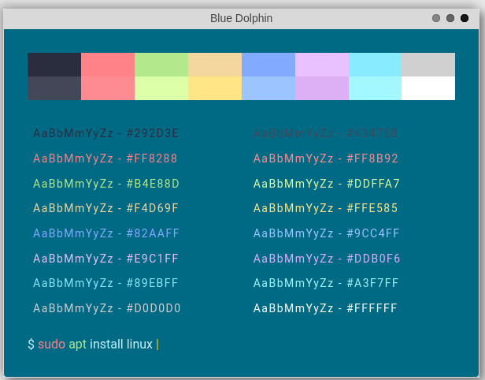
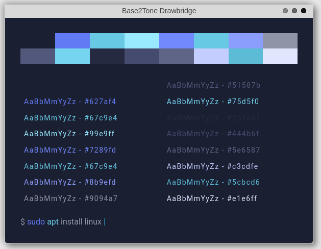

The problem with color schemes
Why are color schemes so blue?
Why do so many look so bad?
What is Shitarized Dark and why do retards use it?
Uncreative Color Schemes
A normal screen using 8-bit RGB color can display 16,777,216 colors, yet color scheme enthusiasts manage to choose the shittiest possible color. They then just make 20 different random shades of that color and there they have a so called color scheme.
From what I counted on Goph, 32 out of 254 themes were not a shade of either black or blue. That means ~87% of all the themes on that site had a background color of either black or blue. Come on, have some creativity.
I think schemes need to be more like Red Alert, Mono Green, Grass, and Fairy Floss. The creators actually had the balls to make something that pops out. Even something like Blue Dolphin isn't apart of the black and blue hivemind, even though it is blue, but because it actually tries to be different with it's shade!
Bad Color Schemes
I'm not saying these are bad color schemes, but when I was looking through Goph I saw the Base2Tone schemes. I attached an example below, who are these for?
Back on topic, when I look at Solarized Dark it's like I'm taking a plasma cutter to my eyes. Honestly, I will say though, Solarized Light is better than I would expect if all I saw was Solarized Dark. The main thing I hate is that in Solarized Dark, 3 colors and 1 almost unnoticeable color have another high shade while all others don't. Solarized Light also has 4 high shades and all the others have the same shade. It's a mess.
Monakai
Take what I just said about uncreative and bad color schemes---and throw it out, grab your card and purchase a license for it now. Monakai is a color scheme that does everything wrong by being uncreative, and looking hurrendous, and then having you purchase a €12.50 ($13.84) license to use it. You really need to pirate color schemes now?

This is the only one of 6 themes that Monakai provided that didn't look shit. It's a decent theme, not worth 14 bucks.
Conclusion
In conclusion, use whatever you like. Even if it's blue, black, gay rainbow unicorn, I don't care.